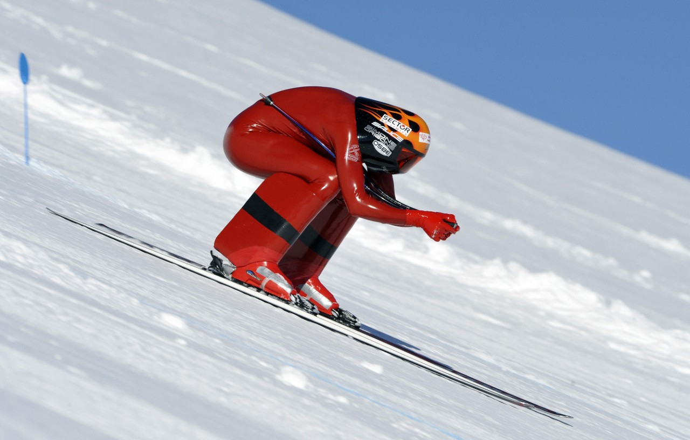

Speed skiing is the sport of skiing downhill in a straight line as quickly as possible. It is one of the fastest non-motorized sports on land. The current world record for skiing is 254.958 kilometers per hour (158.424 mph), held by Ivan Origone. Speed skiers regularly exceed 250 kilometres per hour (155 mph), which is even faster than the terminal velocity of a free-falling skydiver in the belly-to-earth position (about 190 km/h, 120 mph). Speed skiers wear dense foam fairings on their lower legs and aerodynamic helmets to increase streamlining. Their ski suits are made from air-tight latex or have a polyurethane coating to reduce wind resistance, with only a minimal (but mandatory) back protector to give some protection in the case of a crash. The special skis used must be 240 centimeters (94 in) long and at most 10 cm (3.9 in) wide with a maximum weight of 15 kg (33 lb) for the pair. Ski boots are attached to the skis by bindings. The ski poles are bent to shape around the body, and must be a minimum of 1 m (3 ft 3 in) long.
